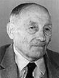

|  |
Eugène Barriault décède à l'âge de 84 ans. Naissance le 27 sep 1906 à Laverlochère, cté Témiscamingue Parrain Mathias Cardinal, marraine sa soeur "Mary" Dolora Barriault. Parrain de Fleurette Rivest. Décès le 20 oct 1990 à Rouyn-Noranda, cté Témiscamingue Funérailles le 23 oct 1990 à Immaculée-Conception de Rouyn-Noranda Sépulture: au cimetière de Laverlochère Père: Honoré Barriault Mère:Anna Bourget (sa famille) Mariage le 26 juin 1935 à St-Isidore de Laverlochère Conjointe: Noëlla Rivest décède à l'âge de 88 ans. Naissance le 26 déc 1914 à Laverlochère, cté Témiscamingue Baptême le 29 déc 1914 à St-Isidore de Laverlochère Baptisée Noëlla, Agnès, Marie. Parrain Urgel Rivet, marraine Agnès Piquette, cousins germains de son grand-père. Marraine de Fleurette Rivest. Décès le 22 juin 2003 à Rouyn-Noranda, cté Témiscamingue Funérailles le 25 juin 2003 à Immaculée-Conception de Rouyn-Noranda Sépulture: 3 août 2003 au cimetière de Laverlochère Père: Emery Rivest/Rivet Mère: Louisée-Marie-Louise Dénommée (sa famille) |